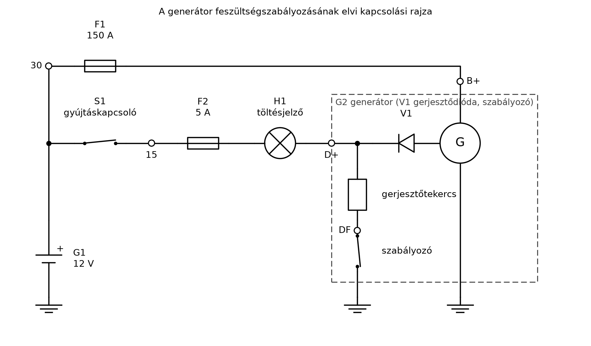

Egy korszerű autón egyre ritkábban látunk állandó -os töltőfeszültséget a multiméteren. Hol -ot, hol -ot, gyorsításkor pedig akár -ot is mérhetünk. Az ügyfél gyakran „nem töltő generátorral” érkezik, mert a műszerfalon mozog a feszültség, vagy a fedélzeti rendszer lekapcsolja a rádiót, az ülésfűtést. Ebben az alfejezetben megértjük, hogyan szabályozza a generátor a feszültséget, és miért ad a mai jármű elektronikája tudatosan változó töltőfeszültség-parancsot a generátornak.
Képzeljük el a generátort egy nagy teljesítményű vízszivattyúnak, a gerjesztőáramot pedig a szivattyú fordulatszámát szabályozó csapnak. Ha a csapot teljesen kinyitjuk (nagy gerjesztőáram), a szivattyú maximális nyomást ad. Ha a motor fordulatszáma emelkedik (a szivattyút forgató külső hajtás gyorsul), a nyomás veszélyesen megnőne, ezért a csapot részben el kell zárni, hogy a nyomás a célértéken maradjon. A feszültségszabályozó pontosan ezt teszi: a fordulatszám és a terhelés függvényében változtatja a gerjesztőáramot.
A szabályozókör vázlatán az a lényeg: az akkumulátor kémiai állapota, a hőmérséklete, a terhelés (villamos fogyasztók) és a motor fordulatszáma határozza meg, mekkora gerjesztőáramot engedjen a szabályozó a forgórész tekercsébe.

Az ábra olvasata. Az akkumulátor 30-as
(plusz) és 31-es (test) kapcsa adja a
referenciafeszültséget. A G2 generátor a B+
kapcsán, az F1 főbiztosítón át ad áramot a hálózatnak. A
gerjesztőtekercs árama
a D+ kapocstól a tekercsen, a DF kapcson és a
szabályozó kapcsolóján keresztül záródik a test felé; álló motornál a
D+ a töltésjelző lámpán át, járó motornál a gerjesztődiódán
át a generátortól kapja az áramot. A töltés visszajelző lámpa a gyújtás
(15) és a generátor D+ kapcsa közötti
feszültségkülönbséget mutatja. Ha a generátor nem tölt, a lámpa a
15 felől test felé kap áramot, és világít; ha tölt, a
D+ és a 15 közel azonos potenciálon van, a
lámpa kialszik.
Definíció. A feszültségszabályozó (voltage regulator) a generátor forgórészének gerjesztőáramát változtatja úgy, hogy a jármű villamos hálózatának feszültsége a kívánt tartományban maradjon a fordulatszámtól, a terheléstől és a hőmérséklettől függetlenül.
Összefüggés. A generátor üresjárási feszültsége közelítőleg , ahol a gerjesztőáram által létrehozott mágneses fluxus, a fordulatszám, pedig a generátor szerkezeti állandója. Mivel a fluxus közelítőleg arányos a gerjesztőárammal -vel, a szabályozó a fordulatszám növekedésekor csökkenti -t, hogy a kívánt értéken maradjon. Túl nagy terhelésnél a szabályozó növeli -t, hogy a fluxus és ezzel a leadható teljesítmény növekedjen.
Szabály. A hagyományos, nem intelligens szabályozású rendszerekben a töltőfeszültség hőmérsékletfüggő célértéke jellemzően – között van; hideg akkumulátornál magasabb, melegnél alacsonyabb (ellenőrizendő: gyártói adat). A belső égésű motorral szerelt járművekben a töltőfeszültség soha nem haladhatja meg tartósan azt az értéket, amely az elektronikát és az akkumulátort károsítaná.
Definíció. Az energiamenedzsment (energy management) a fedélzeti hálózat töltési és fogyasztási folyamatainak felügyelete. A motorvezérlő vagy egy külön akkumulátor-felügyeleti modul az akkumulátor állapota, a hőmérséklet, a terhelés és a menethelyzet alapján parancsot ad a szabályozónak, és szükség esetén korlátozza a komfortfogyasztókat.
Definíció. Az akkumulátor-szenzor (intelligent battery sensor, IBS) az akkumulátor negatív pólusára szerelt mérőegység, amely folyamatosan méri az akkumulátor áramát, a pólusfeszültséget és a hőmérsékletet, majd ebből becsüli a töltöttségi szintet (SoC) és az öregedési állapotot (SoH).
A mai szabályozók alapelve ugyanaz, mint a régi, mechanikus érintkezős változaté: ha a feszültség a célérték alá esik, engedjük a gerjesztőáramot; ha fölé emelkedik, csökkentjük vagy megszakítjuk.
Történeti rendszer. A régi járművön található mechanikus érintkezős szabályozó egy elektromágnesből, egy nyitóérintkezőből és egy soros ellenállásból áll. Az elektromágnes tekercse a generátorfeszültséget figyeli. Ha a feszültség meghaladja a beállított értéket, az elektromágnes meghúzza az érintkezőt, az nyit, és a gerjesztőkörbe egy nagy értékű ellenállás kerül sorba. A gerjesztőáram lecsökken, a generátorfeszültség esik, az elektromágnes elenged, az érintkező újra zár. Ez a „berezgés” másodpercenként sokszor ismétlődik, és az átlagos gerjesztőáramot tartja a kívánt értéken. Hátránya a kopás, a rádiózavar és a pontatlan szabályozás.
A mai generátorokban az érintkezők helyét teljesítmény-félvezető (tranzisztor vagy MOSFET) vette át. A kapcsolás nagy frekvencián (jellemzően több száz Hz-től kHz-ig) kapcsolgatja a gerjesztőáramot. A bekapcsolt és kikapcsolt állapot arányának változtatásával – ez a PWM, impulzusszélesség-moduláció – lehet az átlagos gerjesztőáramot fokozatmentesen állítani.
B+, DF/FL,
GND és a D+.A korszerű járművekben a szabályozó nem önállóan dönt. A generátor szabályozója egy LIN (Local Interconnect Network) adatbuszon keresztül kap parancsot a fedélzeti energiagazdálkodó rendszertől. A vezérlőegység küldhet: - célfeszültséget (), - dinamikus terhelésválasz-korlátot (pl. lassan emelje a terhelést, hogy az alapjárat stabil maradjon), - diagnosztikai kérést (hibakód, terhelés, hőmérséklet).
Az intelligens töltés így a menethelyzethez igazodik: - Gyorsításkor a rendszer csökkenti a generátor terhelését (a gerjesztőáramot leveszi), hogy a motor teljesítménye a kerekekre jusson; a feszültség akár –-ra is leeshet. - Motorfékezéskor és lassításkor a rendszer megnöveli a generátor terhelését, így rekuperálja a mozgási energia egy részét; a feszültség rövid időre fölé is emelkedhet. Ezért nem szabad a mai autón abból, hogy „nem stimmel a töltőfeszültség”, azonnal hibás generátorra következtetni. - Hideg akkumulátornál a célfeszültség magasabb, forró nyáron alacsonyabb, hogy az akkumulátor ne gázosodjon és ne öregedjen.
A szemléltető idődiagram egy városi menetszakaszt mutat: álló motornál az akkumulátor feszültsége (kb. 12,6 V), gyorsításkor 12,3–12,9 V, egyenletes haladásnál a hőmérséklettől függő 14,0–14,8 V-os célérték, lassításkor rövid ideig kb. 15 V. A szakaszok időtartama kitalált; a változó feszültség az energiamenedzsment működése, nem generátorhiba.
Az energiamenedzsment központi eleme az IBS az akkumulátor negatív pólusán. A mért áram előjeléből tudja, hogy éppen töltés vagy kisütés történik, az integrált áramból pedig az akkumulátor töltöttségi szintjét becsüli. A feszültségből és a hőmérsékletből a hidegindító képességre és az öregedésre következtet.
Az ábra szerint az IBS a negatív pólussaruban ül, és csak az rajta átfolyó áramot látja: a lakatfogót a testkábelre, a töltő negatívját a karosszéria testpontjára kötjük (b); a pólusra kötött töltő megkerüli a szenzort, és téves töltöttséget tanít be (c). A bekötési pontot a gyártói előírás adja meg (ellenőrizendő).
Ha az energia-mérleg romlik, a vezérlő fogyasztói lekapcsolásokkal avatkozik be. A lekapcsolások fokozatosak: 1. komfortfogyasztók (ülésfűtés, szélvédőfűtés, tolatóradar), 2. nagyobb fogyasztók (pl. a kiegészítő fűtés, a hangrendszer teljesítménye), 3. korlátozott üzemmód, hibaüzenet a műszerfalon.
A start-stop rendszer szintén az energiamenedzsment része. A motor csak akkor áll le, ha a feltételek teljesülnek: az akkumulátor töltöttsége elég nagy, a motor hőmérséklete elérte a tartományt, a biztonsági feltételek adottak (biztonsági öv, motorháztető zárva), és a beltéri hőmérséklet-szabályozás nem követeli a kompresszort. A start-stop járművek akkumulátora jellemzően AGM (Absorbent Glass Mat, üvegszálas itatólemezes) vagy EFB (enhanced flooded battery) típusú, mert a normál indítóakkumulátor nem bírná a gyakori indítást és ciklizálást. A motormegállás alatt is stabil fedélzeti feszültség biztosítására sok rendszer DC/DC-átalakítót épít be, amely a 12 V-os fogyasztókat táplálja.
Definíció. A nyugalmi áramfelvétel az az áram, amelyet a jármű a gyújtás kikapcsolása és a vezérlőegységek „elalvása” után is felvesz. A mai járművekben ez a riasztó, a központi zár vevője és az adatbusz-vezérlők felébredésre kész áramköre miatt jellemzően – (ellenőrizendő: típusadatok). Ha egy vezérlőegység nem alszik el, vagy egy utólagos fogyasztó rosszul van bekötve, a nyugalmi áram – fölé emelkedhet, és az akkumulátor napok alatt lemerül.
Számítás. Egy jármű nyugalmi áramfelvétele a gyártó által megadott maximális . Az akkumulátor tényleges kapacitása . Hány napig állhat a jármű, ha az indíthatósághoz legalább a kapacitás -át meg kell tartani?
Adott: , , felhasználható töltés .
Keresett: idő.
Képlet: .
Behelyettesítés: .
Eredmény: (lefelé kerekítve, a biztonság javára). ∎
Ellenőrzés. Ha a mért nyugalmi áram lenne, akkor . Ezért egy -es „kis” áramfelvétel már egy hétnyi parkolás alatt indítási problémát okozhat (egy hétvége, kb. alatt is -t, a kapacitás kb. 15%-át viszi el, ami egy már részben lemerült akkumulátornál elég a bajhoz).
A vizsgálatot mindig a gyártói diagnosztikai eljárás szerint végezzük, mert a korszerű rendszerben a feszültség nem állandó.
Egy start-stopos városi autónál az ügyfél arra panaszkodik, hogy a start-stop már nem állítja le a motort. A rendszerteszterrel kiolvasva a rendszer nem jelez hibakódot, de az IBS adatblokkja azt mutatja, hogy az akkumulátor öregedési állapota alacsony, a töltöttségi szint pedig délutánra sem éri el a start-stophoz szükséges küszöböt. A feszültség normál üzemben csak lassan emelkedik, és a vezérlő az „energiamenedzsment korlátozás” miatt nem engedi a motorleállítást. Az ok nem a start-stop gomb, hanem a cserére érett, öreg akkumulátor. Az új AGM-akkumulátor beszerelése után a diagnosztikai rendszerben regisztrálni kell az akkumulátor cseréjét (akkumulátor-regisztráció), hogy az energiamenedzsment friss paraméterekkel számoljon, különben a rendszer továbbra is rosszabbat feltételezne a valósnál.
Biztonsági korlát. A feladat tanműhelyi környezetre, oktató felügyeletére és a gyártói javítási utasítás betartására vonatkozik; a megadott értékek tanulási példák.
Munkalap: intelligens töltőrendszer ellenőrzése
1. feladat (A). Sorold fel, milyen bemenő adatok alapján dönt az energiamenedzsment a töltőfeszültség célértékéről.
2. feladat (A). Hasonlítsd össze a mechanikus érintkezős és a mai MOSFET-es szabályozó működését.
3. feladat (B). Egy intelligens töltési rendszerben a fedélzeti diagnosztika azt mutatja, hogy a generátor terhelési kitöltési tényezője (DFM) , a célfeszültség , a tényleges feszültség viszont . Mit jelez ez a kombináció? Fogalmazz meg egy diagnosztikai hipotézist!
4. feladat (B). Írd le a LIN-vezérelt szabályozó és a hagyományos, csak belső referenciafeszültséget használó szabályozó közötti különbséget az áramútrajz szintjén. Milyen új kivezetésre van szükség?
5. feladat (C). Miért kell a modern akkumulátor-töltő negatív csipeszét a gyártó által kijelölt karosszéria-testpontra kötni, ha a járművet az akkumulátor beszerelése után feltöltjük? Mi történik, ha a töltő negatív kábelét közvetlenül a negatív pólusra kötjük, és a szenzor a mért áramot nem látja?
6. feladat (D). Egy start-stopos autó nem állítja le a motort, pedig az ügyfél szerint az akkumulátor új. A rendszerteszter élőadatában a SoC , a generátor feszültségparancsa , a motor hőmérséklete , a biztonsági öv becsatolva. Mi a legvalószínűbb ok?
Önellenőrzés – válaszok
1. feladat megoldása. Az energiamenedzsment figyelembe veszi az akkumulátor töltöttségi szintjét és öregedési állapotát, az akkumulátor hőmérsékletét, a pillanatnyi villamos terhelést, a motor fordulatszámát, a menetdinamikai állapotot (gyorsítás, motorfékezés), valamint a komfortrendszerek (klíma, fűtés) igényeit.
2. feladat megoldása. A mechanikus szabályozó elektromágnessel és nyitóérintkezővel kapcsolgatja a gerjesztőkört. A MOSFET-es szabályozóban félvezető kapcsoló végzi a kapcsolgatást nagy frekvencián, kopás nélkül, az impulzusok kitöltési tényezőjével pontosabban és gyorsabban szabályozva az átlagos gerjesztőáramot.
3. feladat megoldása. A nagy kitöltési tényező arra utal, hogy a szabályozó maximálisan próbálja hajtani a generátort, de a tényleges feszültség nem éri el a célértéket. Ez nagy valószínűséggel a generátor teljesítményhiányát jelenti a terheléshez képest: kimerült vagy hibás forgórész, kopott csúszógyűrű, gyenge diódahíd, vagy a szabályozó teljesítménykapcsolójának meghibásodása.
4. feladat megoldása. A hagyományos szabályozó csak
belső referenciafeszültséget és belső érzékelőket használ, önállóan
tartja a feszültséget. A LIN-vezérelt szabályozónak van egy
LIN adatbuszcsatlakozója is; a vezérlőegység
célfeszültséget, terhelésválasz-korlátokat küld, és diagnosztikai
adatokat kérdez le. Az áramútrajzon ezért egyetlen adatvezeték fut a
szabályozó és a fedélzeti hálózati modul között (a LIN egyvezetékes
soros busz, a jel a testhez képest értelmezett).
5. feladat megoldása. Az IBS a negatív póluson át folyó teljes áramot méri. Ha a töltő negatív kábelét közvetlenül a pólusra kötjük, a töltőáram a szenzort megkerülve folyik be, tehát az IBS nem látja a betáplált töltést. Az energiamenedzsment úgy érzékeli, mintha az akkumulátor felé nem történt volna töltés, és hibás SoC-értékkel dolgozik tovább. A töltő negatív csipeszét a gyártó által kijelölt karosszéria-testpontra kell kötni, hogy a töltőáram az IBS-en át folyjon, és a mért áram a tényleges fizikai árammal egyezzen.
6. feladat megoldása. A motor hőmérséklete és a biztonsági öv feltétele rendben van. A SoC értéke viszont a legtöbb start-stop rendszerben nem éri el a működéshez szükséges küszöböt (jellemzően – fölött). A legvalószínűbb ok, hogy az új akkumulátor nincs regisztrálva a rendszerben, vagy az IBS kalibrációja hibás maradt, így az energiamenedzsment a régi, öreg akkumulátor becsült paramétereivel számol.
A feszültségszabályozó a generátor gerjesztőáramát szabályozza: nagyobb fordulatszámon csökkenti, nagyobb terhelésnél növeli, így tartja a feszültséget a kívánt tartományban. A régi mechanikus érintkezős szabályozót a mai járművekben félvezetős kapcsolóval működő, PWM-jelű szabályozó váltotta fel, amely multifunkciós kivitelben DFM-monitorjelet ad. A korszerű generátorok LIN-vezéreltek, és az energiamenedzsment – az IBS akkumulátor-szenzor és a motorvezérlő adatai alapján – tudatosan változtatja a töltőfeszültséget: gyorsításkor csökkenti, fékezéskor rekuperációval emeli. A fogyasztó-lekapcsolás, a start-stop feltételrendszere és a nyugalmi áramfelvétel mind ugyanennek az energiagazdálkodásnak a részei. A mai autón a töltőfeszültség nem egyetlen állandó érték, hanem a rendszerállapotot jellemző jel.
Továbbvitt eredmény. A töltőfeszültség-szabályozás és az energiamenedzsment ismeretét használjuk az Indítómotorok alfejezetben a start-stopos indítás elemzéséhez, a Hibrid és elektromos hajtások áttekintése alfejezetben a 12 V-os és HV-hálózat együttműködéséhez, valamint a(z) Az áramellátó és indítórendszer diagnosztikája alfejezetben a töltés- és nyugalmi áram hibakereséséhez.
Forrástípusok: járműgyártói javítási utasítások és szervizinformációk (áramút- és potenciáltervek, energiamenedzsment-élőadatok, akkumulátor-regisztrációs eljárások), a DIN 72552 kapocsjelölés, az MSZ EN IEC 60617 szabvány a rajzjelekre, valamint az akkumulátor- és töltőrendszerre vonatkozó gyártói és nemzetközi szabványi előírások.
Ellenőrizendő állítások: a DIN 72552 kapocsjelölések pontos
alkalmazása (B+, D+, DF,
15, 31) a típusfüggő gyártói rajz szerint; a
célfeszültség-értékek hőmérsékletfüggő tartományai
(–);
a LIN-vezérlésű szabályozó funkcióblokkjai; az IBS által becsült SoC/SoH
start-stop küszöbértékek; a nyugalmi áramfelvétel jellemző határértékei
(–);
a start-stop rendszer konkrét működési feltételei. Minden javítási
beavatkozás előtt a gyártói javítási útmutatót és jármű-specifikus
adatbázist kell ellenőrizni.